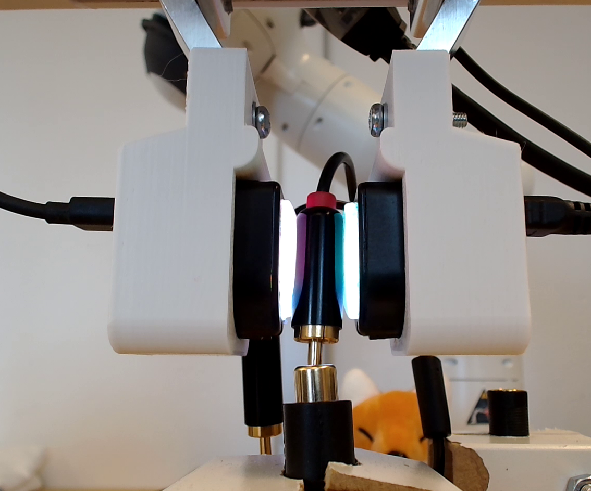
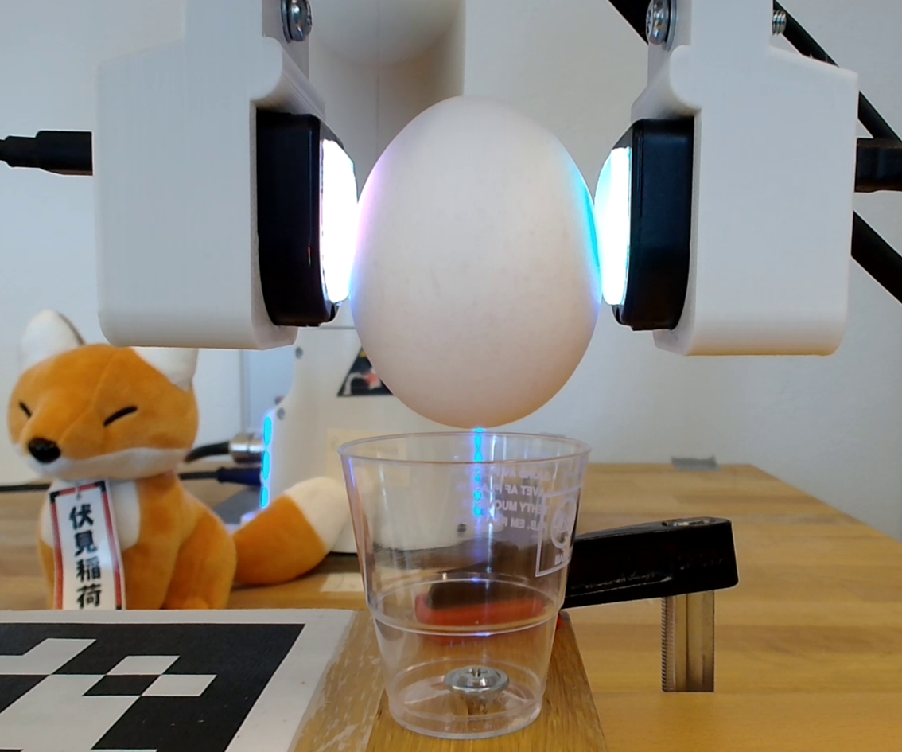
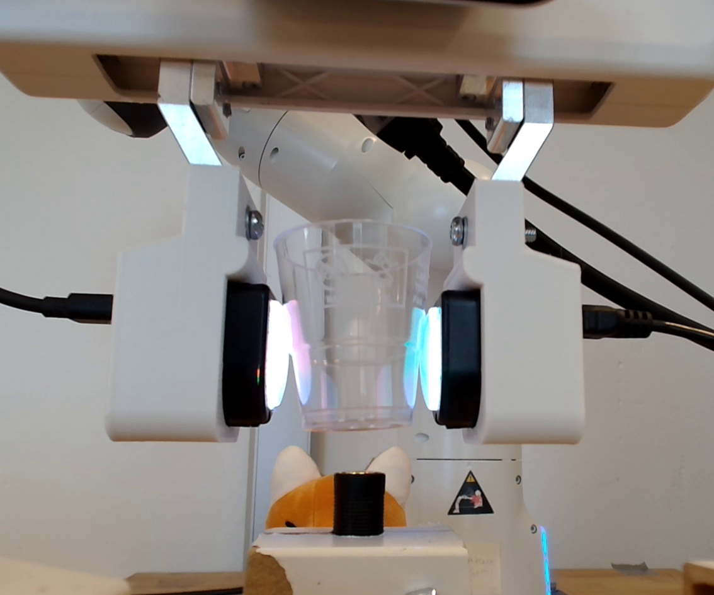

A Low Cost Teleoperation Framework Using Vision-based Tactile Sensors for Rigid and Soft Object Manipulation
Michael C. Welle*, Martina Lippi*, Haofei Lu, Jens Lundell, Andrea Gasparri, Danica Kragic
Endowing robots with tactile capabilities opens up new possibilities for their interaction with the environment, including the ability to handle fragile and/or soft objects. In this work, we equip the robot gripper with low-cost vision-based tactile sensors and propose a manipulation algorithm that adapts both to rigid and soft objects, without requiring any knowledge on their properties. The algorithm relies on a simple touch and slip detection method, which takes into account the variation in the tactile images with respect to reference ones. We validate the approach on seven different objects, with different properties in terms of rigidity and fragility, to perform unplugging and lifting tasks. Furthermore, we integrate the manipulation algorithm into a comprehensive grasping pipeline, that recommends the optimal grasping pose based on the object cloud, and validate it to detach a grape from a bunch without damaging it.
*Contributed equally
Method
Our Method in action:
Manipulation videos
Overall pipeline
Rough connector
Smooth connector
Object
Tactile data
Raw egg
Object
Tactile data
Plastic glass
Object
Tactile data
Tomato
Object